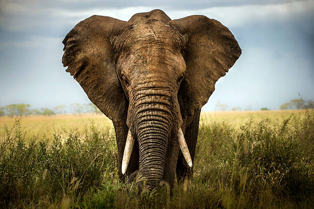

O elefante da savana tem várias características distintas que o diferencia de outras espécies semelhantes. Eles são geralmente maiores que os elefantes da floresta, que possuem orelhas mais arredondadas e presas mais retas. O elefante da savana é conhecido por ter uma parte traseira côncava com pernas grossas e um corpo atarracado. A tromba do elefante têm mais de 40 mil músculos e tendões que lhes permitem levantar objetos pesados.
O elefante da savana é muito maior em altura e peso que o elefante da floresta, com este último tendo orelhas mais redondas e uma tromba mais peluda que o elefante da savana. A espécie possuí poucos ou quase nenhum predador natural além do ser humano. Embora seja a mais numerosa das três espécies de elefantes existentes, a sua população continua a diminuir devido à caça ilegal de marfim e a destruição de seu habitat. Os elefantes da savana fêmeas tendem a ser sociáveis, vivendo em grupos matriarcais liderados pela fêmea mais velha, os machos adultos por outro lado são geralmente solitários.
O tamanho estimado da população de elefantes africanos é de cerca de 300 000, e eles geralmente vivem até 70 anos de idade, quando em estado selvagem. No entanto, em cativeiro eles tendem a viver menos, cerca de 65 anos.
Eles também tendem a ter uma pele acastanhada ou acinzentada que é enrugada com pelos negros, grandes orelhas e uma cauda longa e achatada. O crânio do elefante da savana é muito grande, representando 25% do peso total do corpo.
